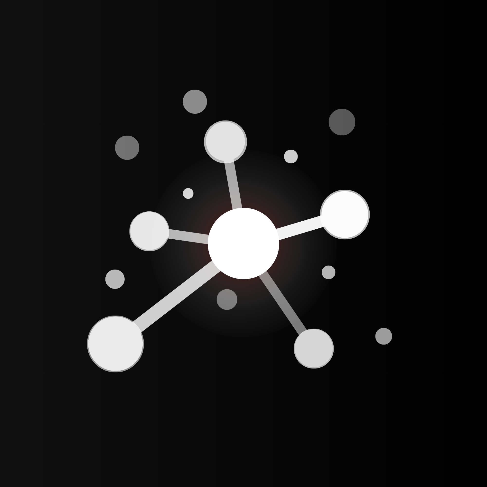

Configure how Nodecast captures and saves content
Override system theme. When disabled, follows your system preference.
Where the save confirmation glow appears on the page.
Customize shortcuts at chrome://extensions/shortcuts
The URL where Nodecast Core receives captured content. Default: http://localhost:5000/api/capture
Required only when Nodecast is on a remote server (not localhost). If running locally, log in to the Web UI first and the session cookie is used automatically. Get token: Web UI sidebar → Copy API Token.
Nodecast Extension v1.1.0 — MVP release.
Sends captured content to your local Nodecast Core API.
All data stays on your machine.